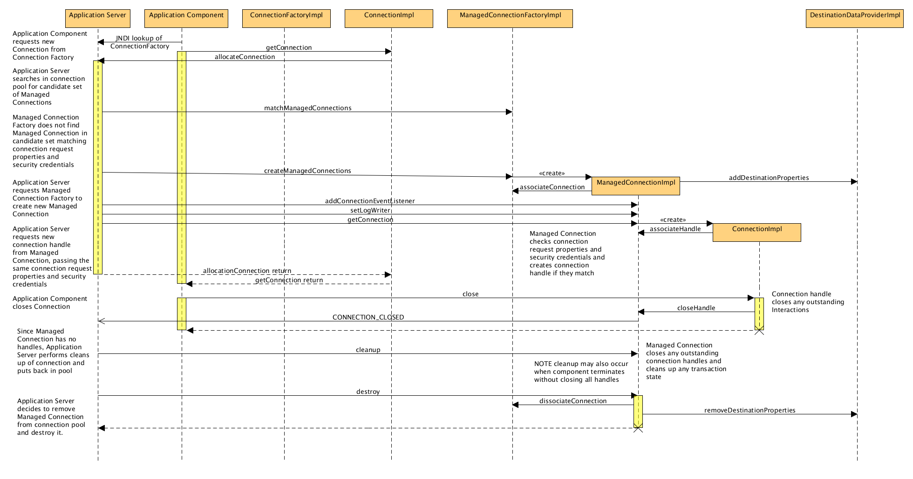
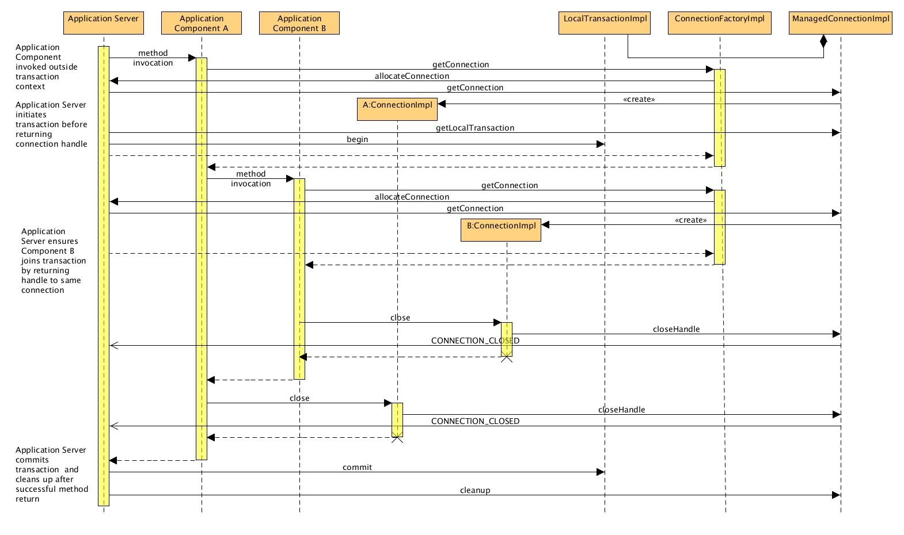

Overview
The JBoss SAP JCA Connector is a Resource Adapter for the JBoss Application Server 7 (JBoss AS7) platform which provides connectivity from the JBoss AS7 platform to SAP® R/3 Enterprise Information Systems (SAP EIS). The JBoss SAP JCA Connector is compliant with the J2EE® Connector Architecture Specification – Version 1.5.
The connector provides outbound communication to an SAP EIS enabling application components to connect to an SAP R/3 system and invoke Remote Function Modules (RFM) and Business Application Programming Interfaces (BAPI) in an SAP system. The connector uses the SAP Java Connector (SAP JCo) standalone version 3.0 library to enable outbound communication to an Advanced Business Application Programming (ABAP) application server running in an SAP system.
Table of Contents
- Overview
- JBoss SAP JCA Connector Features
- Application Programming Model
- JBoss
SAP JCA Resource Adapter Implementation
- Common Client Interfaces
- Service Providers Interfaces
- Connection Lifecycle
- Container Managed Transaction
- Bean Managed Transaction
- Connection Association
JBoss SAP JCA Connector Features
This section provides an overview of the features supported by the JBoss SAP JCA Connector.
Outbound Resource Adapter
The JBoss SAP JCA Connector only provides outbound communication to an SAP R/3 system and thus only implements the service provider interfaces (SPI) for an outbound resource adapter. All communication to the SAP system is initiated by application components running in the application server and execute in the context of an application thread.
Connection Specification
A default connection for the connector can be specified in the
deployment descriptor for the resource adapter. This is done by using
config-property
elements of the
connection-definition
of the
outbound-resourceadapter
configuration. The possible configuration properties are documented in
the deployment descriptor delivered with the connector and correspond
directly to the properties for configuring a
com.conn.jco.JCoDestination
object in the SAP JCo library.
Note that only one default connection can be specified for the connector.
Application components can specify an unlimited number of connections
at runtime using a
JBossSAPConnectionSpec
object. This object is a specialization of the
java.utils.Properties
class that is used to hold connection configurations. These
configurations are used to create physical connections in the
connector runtime to SAP systems. Please refer to the JBossSAPConnectionSpec
and Programmatic Connection Configuration sections for
further details.
Re-Authentication Support
The JBoss SAP JCA connector does not support re-authentication of physical connections. Thus any attempts to re-authenticate a managed connection by calling its getConnection method with a subject other than the one used to create the managed connection in the first place will result in a security exception.
Shared Connection Support
The JBoss SAP JCA connector supports connection sharing of managed connections. This means that a managed connection in the connector can have more than one connection handle associated with it at the same time. Creating a new connection handle to a managed connection does not invalidate any previously create connection handles. The connector support concurrent access to a managed connection through multiple handles.
Connection Association Support
The JBoss SAP JCA Connector supports, as required by the JCA specification, the association of connection handles with different managed connections through the handles lifecycle. The connector also supports the dissociating of connection handles from managed connection entirely (Lazy Connection Association). A connection handle in the JBoss JCA SAP Connector will thus be in one of three states: ACTIVE - valid and associated with a managed connection; INACTIVE - valid but not associated with a managed connection; CLOSED - invalid and not associated with a managed connection.
Mutable Connection Properties
Managed connections in the JBoss SAP JCA connector do not support any mutable connection properties. Once a managed connection is created by the connector runtime its connection properties are fixed. The connector runtime will not change any connection properties including security credentials of a managed connection through out its lifecycle. Any attempts by the application server to modify a managed connection’s properties will result in an exception being thrown by the connector runtime. Instead the application server must create a new managed connection with the given security credentials and connection properties.
Transaction Support
The JBoss SAP JCA Connector provides support for local
transactions. That is it provides support to manage a transaction
through a single managed connection. All operations performed during a
local transaction through a managed connection constitute a recoverable
unit of work, called a transaction context, in the
SAP system. Note that all of the remote function modules called during
a transaction must conform to the BAPI transaction model. That is
these RFMs must not execute database operations directly (call
COMMIT WORK
) in their execution but instead defer these database operations into
an update task.
The context of a local transaction includes all operations that are performed through a managed connection regardless of the connection handle through which these operations were invoked. This enables multiple application components holding different connection handles to the same managed connection to participate in the same transaction. It is the responsibility of the application server to coordinate a transaction by ensuring that components participating in the same transaction all use the same managed connection to an SAP instance when performing operations on that SAP system in the transaction.
The JBoss SAP JCA Connection does not support XA transactions as SAP does not support the two phase commit protocol.
Application Programming Model
This section describes the programming model of the JBoss SAP JCA Connector.
Connection Configuration
Connections to an SAP system can be configured in two ways within the connector.
Default Connection Configuration
A single default connection configuration can be specified for the connector in its deployment descriptor. This connection configuration is used by the connector to connect to an SAP system when an application does not provide its own configuration properties and is hence the default.
The default connection configuration is specified by
config-property
elements in the
connection-definition
of the
outbound-resourceadapter
configuration in the connector’s deployment descriptor. Valid
configuration properties recognized by the connector are listed and
documented in the deployment descriptor delivered with the connector.
Each property corresponds directly to a property for configuring a
com.conn.jco.JCoDestination
object in the SAP JCo library. Please refer to your SAP JCo
documentation for further description of each property.
Note that a default connection configuration should be sufficient to enable the connector to connect to an SAP system without further specification. The following example demonstrates a minimal valid connection configuration for the connector:
<connector xmlns:xsi="http://www.w3.org/2001/XMLSchema-instance" xmlns="http://java.sun.com/xml/ns/j2ee" xmlns:jca="http://java.sun.com/xml/ns/j2ee/connector_1_5.xsd" xsi:schemaLocation="http://java.sun.com/xml/ns/j2ee http://java.sun.com/xml/ns/j2ee/connector_1_5.xsd" version="1.5">
<vendor-name>Red Hat Middleware LLC</vendor-name>
<eis-type>SAP R/3</eis-type>
<resourceadapter-version>1.0.0</resourceadapter-version>
<resourceadapter>
<resourceadapter-class>org.jboss.jca.adapters.sap.impl.ResourceAdapterImpl</resourceadapter-class>
<outbound-resourceadapter>
<connection-definition>
<managedconnectionfactory-class>org.jboss.jca.adapters.sap.impl.ManagedConnectionFactoryImpl</managedconnectionfactory-class>
<config-property>
<config-property-name>ashost</config-property-name>
<config-property-type>java.lang.String</config-property-type>
<config-property-value>nplhost</config-property-value>
</config-property>
<config-property>
<config-property-name>sysnr</config-property-name>
<config-property-type>java.lang.String</config-property-type>
<config-property-value>42</config-property-value>
</config-property>
<config-property>
<config-property-name>client</config-property-name>
<config-property-type>java.lang.String</config-property-type>
<config-property-value>001</config-property-value>
</config-property>
<config-property>
<config-property-name>user</config-property-name>
<config-property-type>java.lang.String</config-property-type>
<config-property-value>developer</config-property-value>
</config-property>
<config-property>
<config-property-name>password</config-property-name>
<config-property-type>java.lang.String</config-property-type>
<config-property-value>ch4ngeme</config-property-value>
</config-property>
<config-property>
<config-property-name>lang</config-property-name>
<config-property-type>java.lang.String</config-property-type>
<config-property-value>en</config-property-value>
</config-property>
<connectionfactory-interface>javax.resource.cci.ConnectionFactory</connectionfactory-interface>
<connectionfactory-impl-class>org.jboss.jca.adapters.sap.impl.ConnectionFactoryImpl</connectionfactory-impl-class>
<connection-interface>org.jboss.jca.adapters.sap.cci.JBossSAPConnection</connection-interface>
<connection-impl-class>org.jboss.jca.adapters.sap.impl.ConnectionImpl</connection-impl-class>
</connection-definition>
<transaction-support>LocalTransaction</transaction-support>
<authentication-mechanism>
<authentication-mechanism-type>BasicPassword</authentication-mechanism-type>
<credential-interface>javax.resource.spi.security.PasswordCredential</credential-interface>
</authentication-mechanism>
<reauthentication-support>false</reauthentication-support>
</outbound-resourceadapter>
</resourceadapter>
</connector>
In this example, a direct connection to an application server in an
SAP system is specified. The application server is designated by the
system number
42
and runs on the host
nplhost
. The connection is connected to the SAP system as client
001
and authenticated with the username
developer
and password
ch4ngeme
using the language
en
, English.
Programmatic Connection Configuration
Application components can specify an unlimited number of connections
at runtime using a
JBossSAPConnectionSpec
object. This object is a specialization of the
java.utils.Properties
class that is used to hold connection configurations. The valid
properties that can be specified in instances of this object and be
recognized by the connector runtime correspond directly to the
properties defined in the
com.sap.conn.jco.ext.DestinationDataProvider
interface. When specifying a connection configuration, it is
recommended that the property name constants defined on this interface
be used as keys when populating a
JBossSAPConnectionSpec
object.
The following example demonstrates how to specify a connection configuration programmatically:
org.jboss.jca.adapters.sap.cci.JBossSAPConnectionSpec connectionConfiguration = new JBossSAPConnectionSpec();
spec.put(DestinationDataProvider.JCO_ASHOST, "nplhost");
spec.put(DestinationDataProvider.JCO_SYSNR, "42");
spec.put(DestinationDataProvider.JCO_CLIENT, "001");
spec.put(DestinationDataProvider.JCO_USER, "developer");
spec.put(DestinationDataProvider.JCO_PASSWD, "ch4ngeme");
spec.put(DestinationDataProvider.JCO_LANG, "en");
Connection Establishment
To establish a connection to an SAP system, an application component
must first obtain a connection factory instance deployed in the JNDI
service of the JBoss AS7 server. Once this object is obtained, the
application component can then use this factory to create a
connection. To create a connection with the default connection
configuration of the connector, an application component will call the
getConnection
method that takes no arguments. To create a connection with a
programmatically specified connection configuration, an application
component will call the version of
getConnection
that takes a
connectionSpec
argument and pass in a
JBossSAPConnectionSpec
object as described in the previous section. The connection created by
this method will have a configuration that is a merging of the
properties of the default configuration of the connector with the
properties of the passed in configuration and with the properties in
the passed in configuration overriding any corresponding properties in
the default configuration. The following example demonstrates the two
ways of creating a connection:
// Perform lookup in JNDI service to obtain connection factory.
javax.naming.Context context = new InitialContext();
javax.naming.cci.ConnectionFactory connectionFactory = (ConnectionFactory) context.lookup("java:/eis/MyFactory");
// Create a connection using default connection configuration.
org.jboss.jca.adapters.sap.cci.JBossSAPConnection defaultConnection = (JBossSAPConnection) connectionFactory.getConnection();
// Create a connection using a programmatically specified connection configuration.
org.jboss.jca.adapters.sap.cci.JBossSAPConnection programmaticConnection = (JBossSAPConnection) connectionFactory.getConnection(connectionConfiguration);
// It is best practice to close connections when done with them
defaultConnection.close();
programmaticConnection.close();
Note that when done using a connection it is best practice to close it in order to release unused connector resources.
Record Management
The JBoss SAP JCA Connector uses records to hold the parameters passed back and forth to an SAP system when invoking BAPIs and remote function modules in the system. In the invocation of a remote function module, an input and optional output record are used to hold the parameters that are to be passed in and passed out of the invocation respectively. For a given remote function module, the input record will hold all of the import, changing and table parameters to be passed to a remote function module as specified by its meta data residing in the meta data respository of the SAP system. The output record will hold all of the export, changing, and table parameters to be passed back from the remote function module as specified by its meta data. In both cases, a record is populated with parameters using the exact same parameter names as specified for the remote function module in its meta data.
Record Types
The JBoss SAP JCA Connector supports two types of records: a
javax.resource.cci.MappedRecord
and a
javax.resource.cci.IndexedRecord
.
Note that the JBoss SAP JCA connector does not
support the
javax.resource.cci.ResultSet
record type.
Mapped Record
A mapped record,
MappedRecord
, is used to hold the values of
com.sap.conn.jco.JCoStructure
type parameter. It is also used to hold the values of a
com.sap.jco.JCoParameterList
type. Note that a mapped record type thus must be used for the input
and output records used in a remote function module invocation. The
MappedRecord
class implements the
java.util.Map
interface and this interface’s standard methods are used to
populate and extract values from the record.
Indexed Record
An indexed record,
IndexedRecord
, is used to hold the values of a
com.sap.conn.jco.JCoTable
type parameter. Each item in the record corresponds to a row in the
JCoTable
parameter. The
IndexedRecord
class implements the
java.util.List
interface and this interface’s standard methods are used to
populate and extract row items from the record.
Record Factory
A record factory,
javax.resource.cci.RecordFactory
, is used to create both indexed and mapped records. An application
obtains a reference to a record factory from a connection factory.
Record Example
The following example demonstrates the creation of records and the population and extraction of parameter values from the records:
// Create an input record to pass parameters to a remote function module.
MappedRecord input = connectionFactory.getRecordFactory().createMappedRecord("input");
// Populate input record with primitive parameter values.
input.put("CHAR_PARAM", "ABCDEFGHIJ");
input.put("NUM_PARAM", "0123456789");
input.put("INT_PARAM", 0x75555555);
input.put("FLOAT_PARAM", 3.14159;
input.put("BCD_PARAM", new BigDecimal("100.00000000000001"));
input.put("BINARY_PARAM", new byte[] { (byte) 0x55 });
input.put("BINARY_ARRAY_PARAM", new byte[] { (byte) 0xFF, (byte) 0x0F, (byte) 0x1E, (byte) 0x2D, (byte) 0x3C, (byte) 0x4B, (byte) 0x5A, (byte) 0x60, (byte) 0x79, (byte) 0x88 });
input.put("DATE_PARAM", new GregorianCalendar(1861, 03, 12).getTime());
input.put("TIME_PARAM", new GregorianCalendar(1970, 0, 1, 12, 15, 30).getTime());
input.put("STRING_PARAM", "Four score and seven years ago ...");
// Populate input record with structure parameter value
MappedRecord structureParam = connectionFactory.getRecordFactory().createMappedRecord("STRUCTURE_PARAM");
structureParam.put("CHAR_PARAM", "ABCDEFGHIJ");
structureParam.put("NUM_PARAM", "0123456789");
structureParam.put("INT_PARAM", 0x75555555);
structureParam.put("FLOAT_PARAM", 3.14159);
structureParam.put("BCD_PARAM", new BigDecimal("100.00000000000001"));
structureParam.put("BINARY_PARAM", new byte[] { (byte) 0x55 });
structureParam.put("BINARY_ARRAY_PARAM", new byte[] { (byte) 0xFF, (byte) 0x0F, (byte) 0x1E, (byte) 0x2D, (byte) 0x3C, (byte) 0x4B, (byte) 0x5A, (byte) 0x60, (byte) 0x79, (byte) 0x88 });
structureParam.put("DATE_PARAM", new GregorianCalendar(1861, 03, 12).getTime());
structureParam.put("TIME_PARAM", new GregorianCalendar(1970, 0, 1, 12, 15, 30).getTime());
structureParam.put("STRING_PARAM", "Four score and seven years ago ...");
input.put("STRUCTURE_PARAM", structureParam);
// Populate input record with table parameter value
IndexedRecord tableParam = connectionFactory.getRecordFactory().createIndexedRecord("TABLE_PARAM");
MappedRecord tableRowParam = connectionFactory.getRecordFactory().createMappedRecord("TABLE_PARAM");
tableRowParam.put("CHAR_PARAM", "ABCDEFGHIJ");
tableRowParam.put("NUM_PARAM", "0123456789");
tableRowParam.put("INT_PARAM", 0x75555555);
tableRowParam.put("FLOAT_PARAM", 3.14159);
tableRowParam.put("BCD_PARAM", new BigDecimal("100.00000000000001"));
tableRowParam.put("BINARY_PARAM", new byte[] { (byte) 0x55 });
tableRowParam.put("BINARY_ARRAY_PARAM", new byte[] { (byte) 0xFF, (byte) 0x0F, (byte) 0x1E, (byte) 0x2D, (byte) 0x3C, (byte) 0x4B, (byte) 0x5A, (byte) 0x60, (byte) 0x79, (byte) 0x88 });
tableRowParam.put("DATE_PARAM", new GregorianCalendar(1861, 03, 12).getTime());
tableRowParam.put("TIME_PARAM", new GregorianCalendar(1970, 0, 1, 12, 15, 30).getTime());
tableParam.add(tableRowParam);
input.put("TABLE_PARAM", tableParam);
// Create an output record to receive parameters from a remote function module.
MappedRecord output = connectionFactory.getRecordFactory().createMappedRecord("output");
// Perform invocation of remote function module.
...
// Extract primitive parameter values from output record.
String charParam = (String) output.get("CHAR_PARAM");
String numParam = (String) output.get("NUM_PARAM");
int intParam = (Integer) output.get("INT_PARAM");
double floatParam = (Double) output.get("FLOAT_PARAM");
BigDecimal bcdParam = (BigDecimal) output.get("BCD_PARAM");
byte[] binaryParam = (byte[]) output.get("BINARY_PARAM");
byte[] binaryArrayParam = (byte[]) output.get("BINARY_ARRAY_PARAM");
Date dateParam = (Date) output.get("DATE_PARAM");
Date timeParam = (Date) output.get("TIME_PARAM");
String stringParam = (String) output.get("STRING_PARAM");
// Extract structure parameter value from output record.
MappedRecord structureParam = (MappedRecord) output.get("STRUCTURE_PARAM");
charParam = (String) structureParam.get("CHAR_PARAM");
numParam = (String) structureParam.get("NUM_PARAM");
intParam = (Integer) structureParam.get("INT_PARAM");
floatParam = (Double) structureParam.get("FLOAT_PARAM");
bcdParam = (BigDecimal) structureParam.get("BCD_PARAM");
binaryParam = (byte[]) structureParam.get("BINARY_PARAM");
binaryArrayParam = (byte[]) structureParam.get("BINARY_ARRAY_PARAM");
dateParam = (Date) structureParam.get("DATE_PARAM");
timeParam = (Date) structureParam.get("TIME_PARAM");
stringParam = (String) structureParam.get("STRING_PARAM");
// Extract table parameter value from output record.
IndexedRecord tableParam = (IndexedRecord) output.get("TABLE_PARAM");
tableRowParam = (MappedRecord) tableParam.get(0);
charParam = (String) tableRowParam.get("CHAR_PARAM");
numParam = (String) tableRowParam.get("NUM_PARAM");
intParam = (Integer) tableRowParam.get("INT_PARAM");
floatParam = (Double) tableRowParam.get("FLOAT_PARAM");
bcdParam = (BigDecimal) tableRowParam.get("BCD_PARAM");
binaryParam = (byte[]) tableRowParam.get("BINARY_PARAM");
binaryArrayParam = (byte[]) tableRowParam.get("BINARY_ARRAY_PARAM");
dateParam = (Date) tableRowParam.get("DATE_PARAM");
timeParam = (Date) tableRowParam.get("TIME_PARAM");
Interaction Execution
The JBoss SAP JCA Connector provides interaction
objects,
javax.resource.cci.Interaction
, that enable JBoss application components to invoke remote function
modules in SAP systems. Interaction objects are created from the
connection to the SAP system that is to be invoked. An interaction
specification,
org.jboss.jca.adapters.sap.impl.InteractionSpec
, is used to designate the remote function module that an interaction
object will invoke. The interaction specification along with input and
output records are passed into the
execute
method of the interaction object to invoke a remote function module.
The following example demonstrates the two forms of invoking a remote
function module using an interaction object:
// Create an interaction object from the connection that will be used to invoke a remote function module.
javax.resource.cci.Interaction interaction = connection.createInteraction();
// Create an interaction specification and set the name of the remote function module to be invoked.
org.jboss.jca.adapters.sap.cci.JBossSAPInteractionSpec interactionSpec = new JBossSAPInteractionSpec()
interactionSpec.setFunctionName("RFC_FUNCTION_MODULE_NAME");
// Create and populate an input record to pass parameters to a remote function module.
javax.resource.cci.MappedRecord input = ...
// Execute the interaction using the form that creates and returns an output record.
javax.resource.cci.MappedRecord output = interaction.execute(interactionSpec, input);
// Extract parameters from output record
...
// An interaction, interaction specification and input and output records can be reused for a new invocation.
// It is best practice to clear the records and re-populate the input record and set a new function module name on the interaction specification if necessary.
interactionSpec.setFunctionName("NEW_RFC_FUNCTION_MODULE_NAME");
output.clear();
input.clear();
// Re-populate input record with new passed parameters
...
// Execute the interaction using the form that returns a boolean indicating the success of the execution.
if (invocation(interactionSpec, input, output)) {
System.out.println("Invocation failed");
return;
}
// Extract parameters from output record
...
// Close the interaction object when done with it.
interaction.close();
The first form of
execute
will create and return an output record populated with the parameters
returned by the remote function module. If the execution of the remote
function module fails the method will return
null
. The second form of
execute
is passed both an input and output record and returns a boolean
indicating the success of the execution.
Note that an interaction object, interaction specification and input and output records can be reused in a new invocation. It is best practice to clear the records and re-populate the input record and set a new function module name on the interaction specification if necessary. Also when done with an interaction object it is best practice to close the it in order to release unused connector resources.
Note that the
execute
method will check, using a function module’s meta data, that all
required parameters to be sent in the invocation are present in the
input record and that all required parameters to be received from the
invocation are present in the output record. If any parameters are
missing, the connector will signal this by throwing a
javax.resource.ResourceException
. The
execute
method will also throw a
ResourceException
when an interaction specification with a null function name is passed
in.
Remote Exception Handling
Any exceptions that occur in the remote SAP system when executing a
function module are linked in an
javax.resource.cci.ResourceWarning
and stored in the
warnings
property of the interaction object. The connector passes the exception
reported by the JCo runtime in the
cause
property of the
ResourceWarning
stored in this property and is an
com.sap.conn.jco.AbapException
type exception.
// Execute interaction
...
// Check if remote exception occured in interaction
javax.resource.cci.ResourceWarning remoteException = interaction.getWarnings();
if (remoteException != null) {
com.sap.conn.jco.AbapException cause = (AbapException) remoteException.getCause();
// Deal with remote exception
...
}
// It is best practice to clear the warnings of an interaction before reusing the interaction.
interaction.clearWarnings();
// Reuse interaction
...
Note that it is best practice to clear any warnings of an interaction before reusing the interaction in order to detect new warnings.
Transaction Execution
The JBoss SAP JCA Connector supports the creation and management of a local transaction context on a connection to an SAP system. Transaction contexts can be initiated and managed either by the application server, container managed transactions (CMT), or by application components, bean managed transaction (BMT).
Container Managed Transactions
A JBoss application component will set its transaction
attribute,
trans-attribute
, in its deployment descriptor to enable CMT. It is also recommended
that an application component set the resource
sharing scope attribute (or accept the default) of any connection resource
reference,
resource-ref
, to
Shared
in order to enable the application server to coordinate transaction
enlistment among application components via connection handle sharing.
With CMT, the application server will transparently manage for
applications the demarcation of transaction contexts
Note that all of the remote function modules called during a
transaction must conform to the BAPI transaction model. That is these
RFMs must not execute database operations directly (call
COMMIT WORK
) in their execution but instead defer these database operations into
an update task.
Bean Managed Transactions
A JBoss application component can managed the demarcation of a local
transaction context by obtaining a local transaction
object,
javax.resource.cci.LocalTransaction
, from a connection. This local transaction object will enable an
application component to manage and organize all interactions
performed through that connection into recoverable logical units of
work. The following example demonstrates the code structure an
application component would use to manage a local transaction:
// Perform a recoverable logical unit of work in connected SAP system.
try {
// Start local transaction in connected SAP system.
connection.getLocalTransaction().begin();
// Execute a series of interactions with SAP system that constitutes the logical unit of work for the transaction.
...
// Commit the local transaction.
connection.getLocalTransaction().commit();
} catch (Exception e) {
// Rollback the transaction upon error.
connection.getLocalTransaction().rollback();
throw e;
} finally {
// Close connection when done with it.
connection.close();
}
A JBoss application component begins a local transaction by calling
begin
on a connection’s local transaction object. After performing a
sequence of interactions with the SAP system using the connection, the
application component commits the logical unit of work by calling
commit
on the local transaction object. If an exception occurs during the
sequence of interactions, the application component can rollback the
work performed by calling
rollback
on the local transaction object.
JBoss SAP JCA Resource Adapter Implementation
The implementation of the JBoss SAP SAP JCA Resource Adapter is divided into two libraries.
The
jboss-sap-jca-api.jar
contains JBoss SAP SAP Connector specific interfaces and classes that
are imported (along with the standard common client interfaces of the
JCA 1.5 specification) into application components to facilitate their
interaction with the connector. All classes and interfaces in this jar
reside in the
org.jboss.jca.adapters.cci
package.
The
jboss-sap-jca-impl.jar
contains the classes that are imported into the JBoss runtime and
implement the common client and service provider interfaces of the JCA
1.5 specification. All class in this jar reside in the
org.jboss.jca.adapters.impl
package.
Both jars are deployed and exposed in the JBoss runtime as modules for import by application components and the JBoss runtime.
Common Client Interfaces
The following sections describe the implementation of the Common Client Interfaces (CCI) of the JBoss SAP JCA Connector.
CCI Connections
The following JBoss SAP JCA Connector classes implement the interfaces of the CCI Connection API.
ConnectionFactoryImpl
The
org.jboss.jca.adapters.sap.impl.ConnectionFactoryImpl
class implements the
javax.resource.cci.ConnectionFactory
interface and provides the mechanism for application components to get
connections to an SAP system. A connection factory is typically
deployed to the JNDI naming service of the JBoss application server to
make it available to application components.
The connection factory will pass the
JBossSAPConnectionSpec
object supplied by the application to the application server when
handling a connection request. This object will be used in selecting
and possibly creating a managed connection in the connector runtime.
JBossSAPConnection
The
org.jboss.jca.adapters.sap.cci.JBossSAPConnection
interface extends the
javax.resource.cci.Connection
interface and exposes properties and functionality of a connection
that are specific to the JBoss SAP JCA Connector. This interface
exposes methods that enable a JBoss application component to directly
manage a stateful session with the SAP system, ping the system and
retrieve the configuration properties of the connection.
ConnectionImpl
The
org.jboss.jca.adapters.sap.impl.ConnectionImpl
class implements the
org.jboss.jca.adapters.sap.cci.JBossSAPConnection
interface and represents a connection handle to a managed connection
in the connector runtime. The class manages the state of the
connection handle (
ACTIVE
,
INACTIVE
and
CLOSED
) and manages its association with a
ManagedConnectionImpl
instance.
Connection Sharing and Immutable Managed Connection
Since
ManagedConnectionImpl
instances are immutable, all
ConnectionImpl
instances sharing the managed connection share the same security
credentials and connection properties. The application server must
create a new managed connection when associating a connection handle
if an existing managed connection can not be found with matching
security credentials and connection properties that are requested.
JBossSAPConnectionSpec
The
org.jboss.jca.adapters.sap.cci.JBossSAPConnectionSpec
class implements both the
javax.resource.cci.ConnectionSpec
and
javax.resource.spi.ConnectionRequestInf
interfaces. This class specializes
java.utils.Propties
and provides a common object type for connection configurations.
Properties populated into this object are used by the connector
runtime when creating connections to an SAP system. The properties
supported by the connector runtime correspond to the same properties
specified in the deployment descriptor and use the same property name
key strings as defined on the
com.sap.conn.jco.ext.DestinationDataProvider
interface of the SAP JCo library. This enables all of the JCo level
connection properties to be specified when creating a connection. Thus
application clients can specify and create any number of connections
to any number of SAP systems.
Note that a
JBossSAPConnectionSpec
property set is also used by the connector runtime to identify a
managed connection in the connector. Each distinct
JBossSAPConnectionSpec
property set is thus associated with a single distinct managed
connection. Thus passing two property sets with identical contents to
a connection request will yield a reference to the same managed
connection.
Please refer to the Connection Establishment section for further details.
ConnectionMetaDataImpl
The
org.jboss.jca.adapters.sap.impl.ConnectionMetaDataImpl
class implements the
javax.resource.cci.ConnectionMetaData
and
javax.resource.spi.ManagedConnectionMetaData
interfaces. A connection meta data object is
associated with a managed connection and exposes to the application
server and application components the product name and version of the
connected SAP system as well as the username used to authenticate with
the system. The connection meta data object also signals to the
application server that the managed connection supports an unlimited
number of active concurrent application handles.
ResourceAdapterMetaDataImpl
The
org.jboss.jca.adapters.sap.impl.ResourceAdapterMetaDataImpl
enumeration implements the
javax.resource.cci.ResourceAdapterMetaData
interface and provides information about the capabilities of the JBoss
SAP JCA Connector to JBoss application components. Application
components access the resource adapter meta data
through an instance of a connection factory.
CCI Interactions
The following JBoss SAP JCA Connector classes implement the interfaces of the CCI Interaction API
InteractionImpl
The
org.jboss.jca.adapters.sap.impl.InteractionImpl
class implements the
javax.resource.cci.Interaction
interface and implements the logic to invoke a remote function module
(RFM) in an SAP system and pass parameters back and forth to the RFM.
The interaction class contains the logic to extract
and populate parameters to and from records to underlying JCo
parameter lists when executing interactions. The class determines
which underlying parameter list a parameter resides in by evaluating
the meta data of the remote function module being invoked. It also
uses this meta data to validate that required parameters are being
sent and returned.
JBossSAPInteractionSpec
The
org.jboss.jca.adapters.sap.cci.JBossSAPInteractionSpec
class implements the
javax.resource.cci.InteractionSpec
interface and provides a JBoss SAP JCA Connector specific way to
configure interactions with an SAP system. The interaction
specification class implements the java bean attributes required by
the J2EE JCA 1.5 specification but only the
functionName
attribute is used by the connector runtime.
RecordFactoryImpl
The
org.jboss.jca.adapters.sap.impl.RecordFactoryImpl
class implements the
javax.resource.cci.RecordFactory
interface and provides a mechanism to create
javax.resource.cci.MappedRecord
and
javax.resource.cci.IndexedRecord
instances. A record factory object is associated with
a connection factory instance and is accessed by JBoss application
components through this record factory.
MappedRecordImpl
The
org.jboss.jca.adapters.sap.impl.MappedRecordImpl
class implements the
javax.resource.cci.MappedRecord
and provides a means to pass a map structure of parameters in an
invocation to an RFM. A mapped record object is used
to hold the values of
com.sap.conn.jco.JCoStructure
type parameter. It is also used to hold the values of a
com.sap.jco.JCoParameterList
type. The
MappedRecord
class also implements the
java.util.Map
interface and this interface’s standard methods are used to
populate and extract values from the record.
IndexedRecordImpl
The
org.jboss.jca.adapters.sap.impl.IndexedRecordImpl
class implements the
javax.resource.cci.IndexedRecord
and provides a means to pass a indexed structure of parameters in an
invocation to an RFM. An indexed record object is
used to hold the values of a
com.sap.conn.jco.JCoTable
type parameter. Each item in the record corresponds to a row in the
JCoTable
parameter. The
IndexedRecord
class also implements the
java.util.List
interface and this interface’s standard methods are used to
populate and extract row items from the record.
Service Providers Interfaces
This section describes the implementation of the system contracts between the JBoss SAP JCA Connector and the application server.
Resource Adapter
The following JBoss SAP JCA Connector classes implement the interfaces of the Resource Adapter API.
ResourceAdapterImpl
The
org.jboss.jca.adapters.sap.impl.ResourceAdapterImpl
class implements the
javax.resource.spi.ResourceAdapter
interface and manages the lifecycle of the JBoss SAP JCA Connector. It
also manages the registration of a
DestinationDataProvider
instance with the underlying JCo runtime over its lifecycle.
Managed Connections
The following JBoss SAP JCA Connector classes implement the interfaces of the Managed Connection API.
ManagedConnectionFactoryImpl
The
org.jboss.jca.adapters.sap.impl.ManagedConnectionFactoryImpl
implements the
javax.resource.spi.ManagedConnectionFactory
and
javax.resource.spi.ResourceAdapterAssociation
interfaces and is responsible for creating and managing a set of
managed connections. The managed connection factory is a source for
creating application level connection factories and managed
connections. The factory also implements the logic for matching connection
request information to a compatible managed
connection.
Default Connection Configuration
The
ManagedConnectionFactoryImpl
is implemented as a java bean and exposes setter and
getter methods for the configuration properties the factory supports.
The application server populates the managed connection factory
through these setter methods with configuration properties set in the
connection-definition
section of the deployment descriptor for the resource adapter. These
properties are maintained by the factory in a
defaultConnectionRequestInfo
property set and are used as default property values when creating
managed connections.
Immutable Managed Connection Enforcement
The
matchedManagedConnections
method of
ManagedConnectionFactoryImpl
enforces the immutability of managed connections by not returning a
managed connection that does not match the passed in security
credentials and connection request properties.
Note that if a non-null
Subject
is passed in any security credential (username and password) in the
subject associated with the connection factory will be used to match
against the credentials of connections in the connection set and mask
and eliminate from consideration any security credential in the passed
connection requests properties.
Managed Connection Matching Algorithm
The managed connection factory selects a managed connection from a passed set of candidate managed connections in its matchManagedConnections method as follows:
- If a non-null subject is passed in, then the private
credentials of the subject must contain a
PasswordCredentialobject associated with the managed connection factory otherwise no matches are returned. - If a non-null subject is passed in, a candidate managed
connection must have credentials that match the credentials of the
PasswordCredentialobject in order for a match to occur. - If a non-null set of connection request information is passed in, then the candidate managed connections must match against the passed in set of properties in order for a match to occur.
- If a null set of connection request information is passed in, then the candidate managed connections must matched against the default connection properties of the managed connection factory in order for a match to occur.
- Each property in the connection property set used for matching must match the corresponding property in the configuration of the candidate managed connection in order for a match to occur.
- The properties in the connection property set used for matching need only be a subset of the candidate managed connection configuration properties in order for a match to occur.
- If a non-null subject is passed in, any username or password property in the connection property set used for matching is ignored.
ManagedConnectionImpl
The
org.jboss.jca.adapters.sap.impl.ManagedConnectionImpl
class implements the
javax.resource.spi.ManagedConnection
interface and encapsulates a
com.sap.conn.jco.JCoDestination
object. This destination object is the underlying
physical connection at the JCo level used to communicate with an SAP
system.
Immutable Managed Connection Enforcement
The
getConnection
method of the
ManagedConnectionImpl
class enforces the immutability of a managed connection by throwing a
javax.lang.SecurityException
if the credentials passed in do not match the credentials of the
managed connection. The method will also throw a
javax.resource.ResourceException
if the connection request properties passed in do not match those of
the managed connection.
Connection Sharing and Concurrency
A
ManagedConnectionImpl
is shareable and supports multiple active connection
handles. Application components can thus access a shared managed
connection concurrently through its multiple connection handles.
ManagedConnectionImpl
is thread-safe and supports concurrent access. Since
ManagedConnectionImpl
instances are immutable, all connection handles to a managed
connection share the same security credentials and connection
properties.
ConnectionMetaDataImpl
The
org.jboss.jca.adapters.sap.impl.ConnectionMetaDataImpl
class implements the
javax.resource.spi.ManagedConnectionMetaData
and
javax.resource.cci.ConnectionMetaData
interfaces and provides information about the SAP system a managed
connection and its corresponding connection handles are connected to.
For example, the username the managed connection used
to connect to the SAP system, the eis product name,
in this case “SAP® R/3”, and the release
version of the connected to system can be determined from the
ConnectionMetaDataImpl
.
The
ConnectionMetaDataImpl
also signals to the application server that the managed connections of
the connector support an unlimited number of active concurrent
connections across client processes to the SAP system by returning the
value
0
for the maximum number of concurrent connections.
DestinationDataProviderImpl
The
org.jboss.jca.adapters.sap.impl.DestinationDataProviderImpl
implements the
com.sap.conn.jco.ext.DestinationDataProvider
interface and stores and manages the configurations used by the JCo
runtime to configure
JCoDestination
instances.
LocalTransactionImpl
The
org.jboss.jca.adapters.sap.impl.LocalTransactionImpl
class implements the
javax.resource.cci.LocalTransaction
and
javax.resource.spi.LocalTransaction
interfaces and provides access to the transaction logic in
ManageConnectionImpl
for application components and the application server to manage and
control the connection’s transactions.
Connection Lifecycle
The following diagram demonstrates the interaction between the JBoss SAP JCA Connector implementation classes and the application server and JBoss application components through out the lifecycle of a connection within the connector.

Container Managed Transaction
The following diagram demonstrates the interaction between the JBoss SAP JCA Connector implementation classes and the application server and JBoss application components in a container managed transaction.

Bean Managed Transaction
The following diagram demonstrates the interaction between the JBoss SAP JCA Connector implementation classes and the application server and JBoss application components in a bean managed transaction.

Connection Association
The following diagram demonstrates the interaction between the JBoss SAP JCA Connector implementation classes and the application server and JBoss application components when re-associating a connection handle during a local transaction.